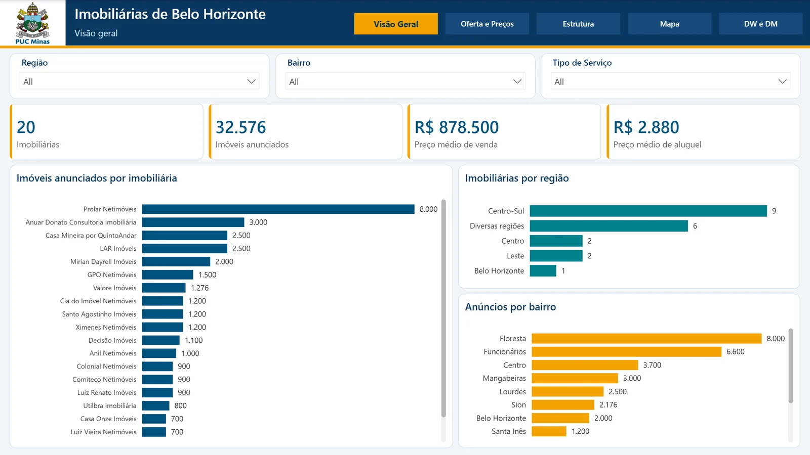

Imobiliárias de Belo Horizonte
Onde estão, quanto anunciam e a que preço. Os mesmos 20 pontos aparecem em um mapa geográfico no ArcGIS e em um painel no Power BI.
- 20imobiliárias
- 12bairros
- 3tipos de serviço
O trabalho
Tema: imobiliárias de Belo Horizonte, organizadas por região e bairro.
No início do semestre o grupo levantou 20 imobiliárias da cidade, com endereço, localização, bairro, região, tipo de serviço, avaliação no Google, funcionários, tempo de mercado, tipos de imóvel, faixas de atendimento, imóveis anunciados e preços médios. Com esses dados montamos um mapa de indicadores geográficos no ArcGIS.
Nesta etapa os mesmos dados viraram um painel no Power BI. A planilha foi tratada e organizada em um modelo estrela (data warehouse), dividido em dois data marts: oferta e preços, e estrutura e reputação.
Mapa geográfico no ArcGIS
O app feito no início do semestre. Ele tem três camadas: anúncios e preço de venda, preço de venda e tempo de mercado, e região e funcionários.
Painel no Power BI
Cinco páginas com os mesmos dados do mapa: visão geral, oferta e preços, estrutura, mapa e o desenho do data warehouse. São 9 gráficos, um mapa e uma tabela, com filtros por região, bairro e tipo de serviço.
A conta da PUC Minas não permite gerar o link público do Power BI (Publicar na Web), então as páginas aparecem aqui como imagens. Para usar os filtros, baixe o arquivo e abra no Power BI Desktop, ou abra o painel no Power BI com login da PUC.

Como fizemos
O caminho da planilha até o painel.
Planilha
CSV com as 20 imobiliárias, o mesmo usado nas camadas do mapa.
Tratamento
No Power Query: tipos de dado, acentos e chaves substitutas (SK).
Data warehouse
Modelo estrela com uma tabela fato e três dimensões.
Data marts
Oferta e preços; estrutura e reputação. Cada um com suas medidas em DAX.
Painel
Gráficos, filtros e mapa, com a identidade visual da PUC Minas.
| Tabela | O que guarda |
|---|---|
| Fato Imobiliárias | Os números: imóveis anunciados, preços de venda e aluguel, funcionários, tempo de mercado e avaliação |
| Dim Imobiliária | Quem é: nome, tipos de imóvel, faixas de atendimento e faixa de tempo de mercado |
| Dim Localização | Onde fica: região, bairro, endereço e coordenadas |
| Dim Serviço | O que faz: compra, venda, locação, loteamento e avaliação |
| Data mart | Medidas |
|---|---|
| Oferta e Preços | Qtd Imobiliárias, Total de Anúncios, Participação nos Anúncios (%), Preço Médio de Venda, Preço Médio de Aluguel |
| Estrutura e Reputação | Total de Funcionários, Anúncios por Funcionário, Tempo Médio de Mercado (anos), Avaliação Média no Google |